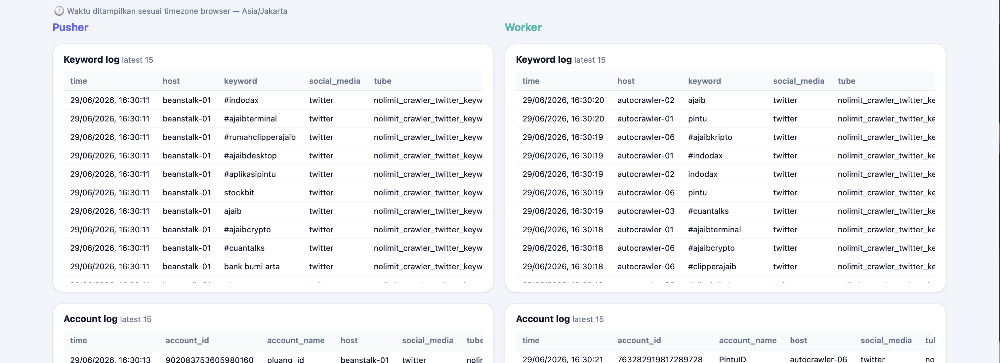
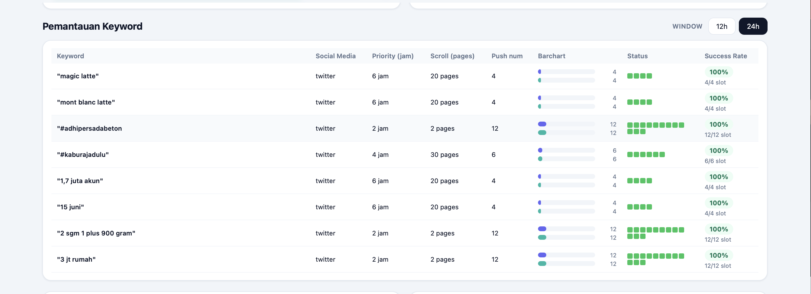
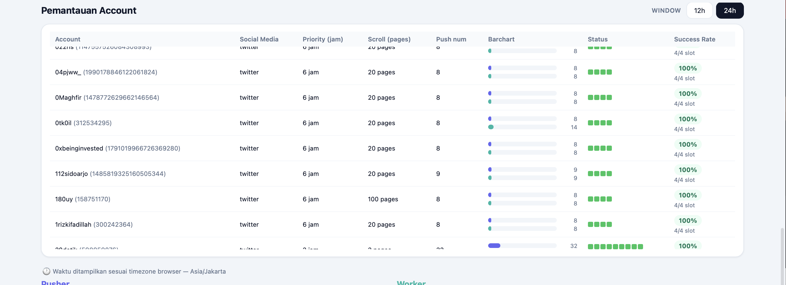
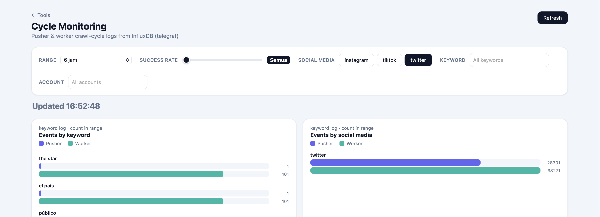

Cycle Monitoring
System
No visibility into whether tens of thousands of crawl jobs were actually running on schedule
PT Nolimit Indonesia's social media ingestion pipeline runs continuous crawl jobs across Twitter/X and Instagram for thousands of tracked keywords and accounts. Each object has its own crawl frequency (priority interval) and scroll depth configured in the database — but there was no way for operators to know if jobs were being dispatched on time, stalling in the queue, or silently failing.
With no monitoring layer, a stalled Pusher or a backed-up Worker queue could go undetected for hours, causing gaps in data coverage for government and corporate clients who depend on continuous social media intelligence.
Dual-source reads, time-slot health scoring, and a JWT-secured API layer
- Designed a dual-source read architecture that simultaneously queries InfluxDB for live event logs (Pusher and Worker/autocrawler activity) and PostgreSQL (obj_management) for crawl configuration metadata — crawl frequency and scroll depth — on every dashboard request.
- Built a time-slot health scoring system: the monitoring window is segmented into slots based on each object's priority interval, and a slot is marked successful if a push event is detected within it — accounting for minor network delays through a configurable grace period.
- Computed a success rate metric (completed slots ÷ expected slots) per object, alongside live on-time flags so operators can instantly spot stalled crawl processes.
- Optimised query performance for tens of thousands of tracked objects by filtering to
isActive=Trueentries and paginating to 100 rows per view, keeping dashboard load times fast regardless of dataset size. - Synchronised searchable account and keyword dropdowns with PostgreSQL to ensure filters reflect actual database state rather than raw InfluxDB tags, preventing stale or inconsistent filter options.
- Exposed the monitoring data through 7 JWT-secured Django REST API endpoints, covering metrics retrieval, object search, and configuration lookups — keeping all dashboard data access authenticated and auditable.
- Built the frontend in vanilla JavaScript with comparative bar charts for Pusher vs. Worker throughput, interactive time range sliders, and success rate filters for auditing underperforming crawl objects.
The dashboard gave operators their first real-time view into the health of the crawl pipeline — surfacing success rates, on-time flags, and Pusher vs. Worker throughput comparisons in a single interface. Stalled jobs that previously went undetected for hours could now be identified immediately via the success rate filter and on-time indicators.
The system was integrated into PT Nolimit Indonesia's internal analytics infrastructure, handling tens of thousands of active tracking objects across multiple platforms and client accounts — with dual-source reads kept performant through targeted filtering and pagination.



